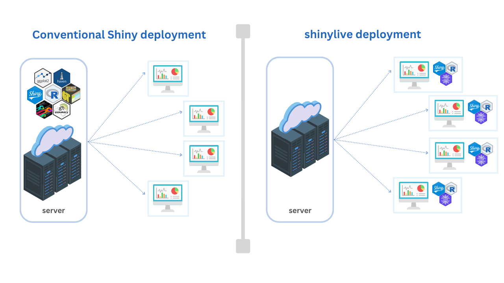

shinylive POC
1 Overview
Shinylive is a serverless version of Shiny, which enables running Shiny applications in a web browser without needing a backend server. It was first introduced for Python during Posit Conf 2022 using WebAssembly and Pyodide, and its R version during the Posit Conf 2023 using WebR.

Currently, there are three methods (or formats) to use Shinylive applications:
- Render a Shiny app into HTML static file using the shinylive package
- Host a Shiny app in Fiddle - a built-in web application to run Shiny R and Python applications
- Embed Shiny app in Quarto documentation using the quarto-shinylive extension for Quarto
2 ADSL Analysis
#| standalone: true
#| viewerHeight: 600
library(gtsummary)
library(shiny)
library(gt)
library(dplyr)
library(purrr)
library(DT)
library(haven)
library(ggplot2)
# create the Shiny app
#? ui side
ui <- navbarPage( "ADSL shinylive POC", id = 'navbar_id',
# homepage with description
tabPanel("",
icon = icon("home", lib = "glyphicon"),
h2("shinylive: Run 'shiny' Applications in the Browser"),
br(),
h4("
Exporting 'shiny' applications with 'shinylive' allows you to run them entirely in a web browser, without the need for a separate R server. The traditional way of deploying 'shiny' applications involves in a separate server and client: the server runs R and 'shiny', and clients connect via the web browser.
"),
br(),
h4("When an application is deployed with 'shinylive', R and 'shiny' run in the web browser (via 'webR'): the browser is effectively both the client and server for the application. This allows for your 'shiny' application exported by 'shinylive' to be hosted by a static web server.")
#br(),
#tags$img(src = "./shinylive.png", width = "60%", style="display: block; margin-left: auto; margin-right: auto;")
),
# import data
#tabPanel("Data",
# fluidRow(
# column(3,
# uiOutput("import_data_ui1"),
# actionButton(inputId = 'reset_data',"Reset data", icon = icon("refresh", lib = "glyphicon"))
# ),
# column(9, DT::dataTableOutput('out_table'))
# )
# ),
tabPanel("Data",
fluidRow(
column(3,
tabsetPanel( id = "tab_data",
br(),
tabPanel('Import',
fileInput("file1", "Choose File (csv/sas7bdat/xpt)",
accept = c( ".csv", ".sas7bdat", ".xpt"))),
tabPanel("Default",
p('An ADSL-flavored clinical trial toy dataset from gt package.'),
p('This tibble contains artificial data for 182 subjects of the GT01 study. Each row corresponds to demographic characteristics of a single trial participant. Two out of 182 study participants were screen failures and thus not treated, the rest of the study population was randomized with a 1:1 ratio to receive either "Placebo" (as comparator) or "Drug 1". The dataset entails subject level demographics such as age, age group, sex, ethnicity, and body mass index (BMI) at baseline, as well as an event flag, indicating whether the subject experienced a specific event throughout the course of the study or not.'),
br(),
actionButton('get_local_data',"Load Default data")
)
)),
column(9, DT::dataTableOutput('out_table'))
)
),
# table section
tabPanel("Table",
fluidRow(
column(4,
wellPanel(uiOutput("custom_ui1")),
wellPanel(uiOutput("custom_ui2")),
wellPanel(
p(strong('Filters;')),
fluidRow(
column(6, align = 'right', checkboxInput("ittfl", "ITTFL", FALSE)),
column(6, align = 'left', checkboxInput("saffl", "SAFFL", FALSE))
),
sliderInput(inputId = "age", "Age:", min = 1, max = 100, value = c(1,100), step=1, ticks=TRUE)
),
br(),
actionButton(inputId = 'reset_filter',"Reset filters", icon = icon("cog", lib = "glyphicon"))
)
,column(8,
fluidRow(
gt::gt_output("summaryds1")
)
)
))
# boxplot section
,
tabPanel("Plot",
fluidRow(
column(3,
wellPanel(uiOutput("ggbox_ui1")),
wellPanel(uiOutput("ggbox_ui2"))
#br(),
#downloadButton("download_ggbox", label = "Download Plot")
)
,column(9,
plotOutput("boxplot")
))
)
# end
)
#? server side
server <- function(input, output, session) {
# function
is.Date <- function(x) {
inherits(x, c("Date", "POSIXt"))
}
#?
observeEvent(input$reset_filter, {
req(input$file1)
updateCheckboxInput(session, "ittfl", label = NULL, value = FALSE)
updateCheckboxInput(session, "saffl", label = NULL, value = FALSE)
updateSliderInput(session, "age", min = 1, max = 100, value=c(1, 100), step=1)
})
#?
#rv <- reactiveValues()
#observeEvent(input$file1, {
# rv$file1 <- input$file1
# })
#? render import data ui
#observe({
#if(req(input$navbar) == "Data"){
# output$import_data_ui1 <- renderUI({
# fileInput("file1", "Choose File (csv/sas7bdat/xpt)",
# accept = c( ".csv", ".sas7bdat", ".xpt"))
# })
# }
# })
#? reset
# observeEvent(input$reset_data, {
# rv$file1 <- NULL
# output$import_data_ui1 <- renderUI({
# fileInput('file1', label = NULL)
# })
# })
#import ds
import_data <- reactive({
req(input$file1)
#infile <- rv$file1
infile <- input$file1
# validation
ext <- tools::file_ext(infile$datapath)
validate(need(ext %in% c("csv","xls","sas7bdat","xpt"), "Please upload the file!"))
if(ext == "csv"){
read.csv(infile$datapath)
} else if(ext == "xpt"){
read_xpt(infile$datapath)
} else if(ext == "sas7bdat"){
read_sas(infile$datapath)
}
})
#? local data
local_data <- eventReactive(input$get_local_data, {
# haven::read_xpt('adsl.xpt')
gt::rx_adsl %>%
filter(!is.na(TRTA))
})
#? finalize the data
react_data <- reactive({
if (input$tab_data == "Default"){
local_data()
} else{
import_data()
}
})
#?
output$out_table <- DT::renderDataTable({
#req(input$file1)
react_data() %>% DT::datatable(options = list(lengthMenu = c(5, 30, 50), pageLength = 5))
})
#? custom ui part
#
output$custom_ui1 <- renderUI({
req(react_data())
trt_cols <- react_data() %>%
dplyr:: select(starts_with("TRT")) %>%
purrr::discard(~is.numeric(.)) %>%
purrr::discard(~is.Date(.)) %>%
names()
selectInput("trtvariable", "Select Treatment Variable:",trt_cols, trt_cols[1])
})
# y
output$custom_ui2 <- renderUI({
req(react_data())
non_num_cols <- react_data() %>%
dplyr:: select(!starts_with("TRT")) %>%
purrr::discard(~is.numeric(.)) %>%
names()
selectizeInput( "variable2", "Select Variables:",non_num_cols,
options = list(placeholder = 'Choose'),
multiple = TRUE)
})
#? gt table
runsummaryds1 <- reactive({
req(react_data())
newadsl<- react_data()
#? filter conditions
if(input$ittfl==TRUE & ("ITTFL" %in% names(newadsl))) {newadsl <- newadsl %>% filter(ITTFL %in% c("Y"))}
if(input$saffl==TRUE & ("SAFFL" %in% names(newadsl))) {newadsl <- newadsl %>% filter(SAFFL %in% c("Y"))}
#?
newadsl<-newadsl%>%filter(AGE>=input$age[1] & AGE<=input$age[2])
req(input$variable2)
validate(need(nrow(newadsl) != 0, "Data is empty"))
# table
newadsl %>%
dplyr::select(input$trtvariable,!!!input$variable2)%>%
tbl_summary(by=input$trtvariable,
missing_text="(Missing)",
type=all_continuous()~"continuous2",
statistic=all_continuous()~c("{N_nonmiss}",
"{mean} ({sd})", "{median}", "{min}, {max}"))%>%
add_overall(last=TRUE) %>%
as_gt()
})
# gt_summary
output$summaryds1 <- gt::render_gt({
runsummaryds1()
})
#? boxlots
output$ggbox_ui1 <- renderUI({
req(react_data())
trt_cols <- react_data() %>%
dplyr:: select(starts_with("TRT")) %>%
purrr::discard(~is.numeric(.)) %>%
purrr::discard(~is.Date(.)) %>%
names()
selectInput("boxp_trtvariable", "Select Treatment Variable:",trt_cols, trt_cols[1])
})
# selectinput
output$ggbox_ui2 <- renderUI({
req(react_data())
subj_cols <- react_data() %>%
dplyr:: select(!starts_with("TRT")) %>%
purrr::discard(~ !is.numeric(.))%>%
purrr::discard(~is.Date(.)) %>%
names()
#
if('AGE' %in% subj_cols){
sel_subj <- "AGE"
}else{
sel_subj <- subj_cols[1]
}
#
selectInput("subject_data", "Subject Data",subj_cols, sel_subj)
})
# reactive plot
gg_boxplot <- reactive({
req(react_data())
req(input$subject_data)
ggplot(data = react_data(),
aes(x = .data[[input$boxp_trtvariable]],
y = .data[[input$subject_data]],
fill = .data[[input$boxp_trtvariable]])) +
geom_boxplot() +
geom_jitter(width = 0.3, alpha = 0.4) +
theme_minimal() +
theme(legend.position = "none",
text = element_text(size = 15)) +
labs(
title = "ADSL Data",
subtitle = "Comparing Treatment Groups",
x = "",
#x = attributes(react_data[[input$boxp_trtvariable]]),
y = attributes(react_data()[[input$subject_data]])
)
})
# plot
output$boxplot <- renderPlot({
gg_boxplot()
}, res = 100, height = 600)
#? download boxplot
output$download_ggbox <- downloadHandler(
filename = function() { paste("ggbox_",format(Sys.time(), "%Y%m%d_%H%M%S"), '.svg', sep='') },
content = function(file) {
ggsave(file, plot = gg_boxplot(), device = "svg", width = 12, height = 8)
}
)
# end
}
# Run the application
shinyApp(ui = ui, server = server)
3 Survival Analysis
Generally, survival analysis is a collection of statistical procedures for data analysis for which the outcome variable of interest is time until an event occurs.
In the medical world, we typically think of survival analysis literally – tracking time until death. But, it’s more general than that – survival analysis models time until an event occurs (any event). This might be death of a biological organism. But it could also be the time until a hardware failure in a mechanical system, time until recovery, time someone remains unemployed after losing a job, time until a ripe tomato is eaten by a grazing deer, time until someone falls asleep in a workshop, etc. Survival analysis also goes by reliability theory in engineering, duration analysis in economics, and event history analysis in sociology.
Type of events: death, disease, relapse, recovery…
#| standalone: true
#| viewerHeight: 600
library(shiny)
library(dplyr)
library(echarts4r)
library(survival)
library(survminer)
library(DT)
###?
#' linebreak function to avoid repeat use of br()
#'
#' @param n
#'
#' @return
#' @export
#'
#' @examples
linebreaks <- function(n){
HTML(strrep(br(), n))
}
# ----
#' get survfit summary data
#'
#' @param dat
#' @param time_var
#' @param event_var
#'
#' @return
#' @export
#'
#' @examples
#' get_surv_summary(lung, time, status)
get_surv_summary <- function(dat, time_var, event_var) {
# unquoting
time_var <- enquo(time_var)
event_var <- enquo(event_var)
# data
dat <- dat %>%
rename(time = (!!time_var),
event = (!!event_var)) %>%
dplyr::select(time, event)
eq_0 <- glue::glue("survfit( ")
eq_left <- glue::glue("Surv(time, event)")
eq_tilde <- glue::glue("~")
eq_right <- glue::glue(" 1 ")
eq_data <- glue::glue(", dat)")
comp_eq <-
glue::glue(eq_0, eq_left, eq_tilde , eq_right, eq_data)
# survfit
#sfit <- survfit(Surv(time, event) ~ 1, data = data )
sfit <- eval(rlang::parse_expr(comp_eq))
# convert survfit modal to dataframe
res <- surv_summary(sfit)
# transform
res_df <- res %>%
as_tibble() |>
mutate(surv = round(surv, 2))
return(res_df)
}
##?
# sfit_df1 <- get_surv_summary(lung, time, status)
# sfit_df2 <- get_surv_summary(veteran, time, status)
# ----
#' Interactive kaplan-meier
#'
#' @param sfit_df
#'
#' @return
#' @export
#'
#' @examples
#' plot_km(sfit_df1)
plot_km <- function(dat) {
# echarts line plot
dat |>
e_charts(time) |>
e_line(surv)
}
# ----
#?
#' get surv group summary data with a categorical variable
#'
#' @param dat
#' @param time_var
#' @param event_var
#' @param grp_var
#'
#' @return
#' @export
#'
#' @examples
#' sfit_grp_df1 <- get_surv_grp_summary(lung, time, status, sex)
get_surv_grp_summary <-
function(dat, time_var, event_var, grp_var) {
# unquoting
time_var <- enquo(time_var)
event_var <- enquo(event_var)
#grp_var <- enquo(grp_var)
if (grp_var == 1) {
grp_var <- 1
} else{
grp_var <- rlang::sym(grp_var)
}
# data
df <- dat %>%
rename(time = (!!time_var),
event = (!!event_var)) %>%
dplyr::select(time, event, (!!grp_var))
#
eq_0 <- glue::glue("survfit( ")
eq_left <- glue::glue("Surv(time, event)")
eq_tilde <- glue::glue(" ~ ")
eq_right <- glue::glue(grp_var)
#eq_right <- paste(grp_var[2])
eq_data <- glue::glue(", df)")
comp_eq <-
glue::glue(eq_0, eq_left, eq_tilde , eq_right, eq_data)
# survfit
sfit <- eval(rlang::parse_expr(comp_eq))
# convert survfit modal to dataframe
res <- surv_summary(sfit)
# transform
res_df <- res %>%
as_tibble() |>
mutate(surv = round(surv, 2))
return(res_df)
}
#
# sfit_grp_df1 <- get_surv_grp_summary(lung, time, status, sex)
# sfit_grp_df2 <- get_surv_grp_summary(veteran, time, status, trt)
# sfit_grp_df3 <- get_surv_grp_summary(veteran, time, status, 1)
# ----
#' Interactive kaplan-meier with a categorical variable
#'
#' @param dat
#'
#' @return
#' @export
#'
#' @examples
plot_km_group <- function(dat) {
dat |>
group_by(strata) |>
e_charts(time) |>
e_line(surv) |>
e_tooltip(trigger = "axis")
}
# plot_km_group(sfit_grp_df1)
#!
#get_surv_censor <- function(dat){
#dat %>%
# mutate(surv_censor = case_when((n.censor > 0) ~ surv,
# (n.censor == 0) ~ NA_integer_,
# TRUE ~ NA_integer_))
#}
#sfit_cens_df1 <- get_surv_censor(sfit_grp_df1)
# ----
#' Kaplan-Meier advanced plot
#'
#' @param dat
#' @param tit
#' @param sub_tit
#'
#' @return
#' @export
#'
#' @examples
plot_echart_km <-
function(dat, tit = "Kaplan-Meier Plot", sub_tit = "data") {
# check "strata" in data
stopifnot("strata" %in% colnames(dat))
# plot
dat |>
mutate(surv_censor = case_when((n.censor > 0) ~ surv,
(n.censor == 0) ~ NA_integer_,
TRUE ~ NA_integer_
)) |>
group_by(strata) %>%
e_charts(time) |>
e_line(
surv,
showSymbol = TRUE,
symbolSize = 3,
itemStyle = list(opacity = 0.6)
) |>
e_line(
surv_censor,
showSymbol = TRUE,
itemStyle = list(
borderWidth = 1,
borderColor = '#7B7C81',
color = '#91cc75',
shadowColor = '#91cc75'
),
symbol = 'triangle',
symbolSize = 6,
tooltip = list(show = FALSE),
legend = list(show = FALSE)
) |>
e_tooltip(trigger = "axis") |>
e_mark_line(
data = list(yAxis = 0.5),
y_index = 1,
symbol = "none",
lineStyle = list(type = 'dashed'),
itemStyle = list(color = "#e76f51"),
title = "50% threshold",
label = list(position = "insideEndTop")
) |>
e_title(text = tit, subtext = sub_tit) |>
e_x_axis(
axisLabel = list(fontSize = 12, color = '#333'),
name = "Time",
nameGap = 40,
nameLocation = 'middle',
nameTextStyle = list(
color = '#333',
fontSize = 16,
fontWeight = 500
)
) |>
e_y_axis(
axisLabel = list(fontSize = 12, color = '#333'),
name = "Survival Probability",
nameGap = 40,
nameLocation = 'middle',
nameTextStyle = list(
color = '#333',
fontSize = 16,
fontWeight = 500
)
)
}
# plot_echart_km(sfit_grp_df1, tit = "KM Plot", sub_tit = "lung")
# ----
#!
#' Kaplan-Meier advanced plot with timeline
#'
#' @param dat
#' @param tit
#' @param sub_tit
#'
#' @return
#' @export
#'
#' @examples
#' plot_echart_timeline_km(sfit_grp_df1, tit = "Kaplan-Meier Plot", sub_tit = "Lung Data", time_line = TRUE)
plot_echart_timeline_km <-
function(dat,
tit = "Kaplan-Meier Plot",
sub_tit = "data",
time_line = TRUE) {
# check "strata" in data
#stopifnot("strata" %in% colnames(dat))
if ("strata" %in% colnames(dat)) {
dat1 <- dat |>
mutate(surv_censor = case_when((n.censor > 0) ~ surv,
(n.censor == 0) ~ NA_integer_,
TRUE ~ NA_integer_
)) |>
group_by(strata)
} else{
dat1 <- dat |>
mutate(surv_censor = case_when((n.censor > 0) ~ surv,
(n.censor == 0) ~ NA_integer_,
TRUE ~ NA_integer_
))
}
# plot
ec1 <- dat1 |>
e_charts(time) |>
e_line(
surv,
showSymbol = TRUE,
symbolSize = 3,
itemStyle = list(opacity = 0.6)
) |>
e_line(
surv_censor,
showSymbol = TRUE,
itemStyle = list(
borderWidth = 1,
borderColor = '#7B7C81',
color = '#91cc75',
shadowColor = '#91cc75'
),
symbol = 'triangle',
symbolSize = 6,
tooltip = list(show = FALSE),
legend = list(show = FALSE)
) |>
e_tooltip(trigger = "axis") |>
e_mark_line(
data = list(yAxis = 0.5),
y_index = 1,
symbol = "none",
lineStyle = list(type = 'dashed'),
itemStyle = list(color = "#e76f51"),
title = "50% threshold",
label = list(position = "insideEndTop")
) |>
e_title(text = tit, subtext = sub_tit) |>
e_x_axis(
axisLabel = list(fontSize = 12, color = '#333'),
name = "Time",
nameGap = 40,
nameLocation = 'middle',
nameTextStyle = list(
color = '#333',
fontSize = 16,
fontWeight = 500
)
) |>
e_y_axis(
axisLabel = list(fontSize = 12, color = '#333'),
name = "Survival Probability",
nameGap = 40,
nameLocation = 'middle',
nameTextStyle = list(
color = '#333',
fontSize = 16,
fontWeight = 500
)
) |>
e_toolbox(
show = TRUE,
feature = list(
dataZoom = list (yAxisIndex = 'none'),
dataView = list (readOnly = TRUE),
restore = list(TRUE),
saveAsImage = list(TRUE)
)
)
# timeline
if (time_line) {
ec2 <- ec1 |>
e_datazoom(type = "slider")
} else{
ec2 <- ec1
}
ec2
}
#?
ui <- fluidPage(
h2("Lung Data - Survival Analysis")
, linebreaks(1)
, fluidRow(
column(3, uiOutput(("time_ui")))
,
column(3, uiOutput(("event_ui")))
,
column(3, uiOutput(("grp_ui")))
,
column(3,
tags$div(
style = "margin-top: 32px;",
actionButton("run_km", "Run")
)
)
)
, linebreaks(1)
, fluidRow(
column(2),
column(8, echarts4rOutput("plot", width = '90%', height = '600px')),
column(2)
)
, linebreaks(1)
, fluidRow(
column(2)
,column(8,DTOutput('summary_tbl', width = 900))
,column(2)
)
)
#?
server <- function(input, output, session) {
#? lung data
select_df <- reactive({
lung
})
observeEvent(input$run_km, {
output$summary_tbl = renderDT(
get_surv_grp_summary(select_df(), input$time, input$event, input$grp) %>%
mutate(across(where(is.numeric), round, 4)),
options = list(scrollX = TRUE)
)
})
#
output$time_ui = renderUI({
req(select_df())
#col_names1 <- select_df() %>% colnames()
col_names1 <- select_df() %>% purrr::discard(~ !is.numeric(.)) %>% names()
if ("time" %in% c(col_names1)) {
sel_col1 <- "time"
} else{
sel_col1 <- col_names1[1]
}
selectizeInput(
"time",
"x-axis",
col_names1,
selected = sel_col1,
multiple = FALSE,
size = "sm"
)
})
# variable 2
output$event_ui = renderUI({
req(input$time)
#col_names2 <- select_df() %>%
# dplyr::select(-(input$time)) %>%
# colnames()
col_names1 <- select_df() %>% purrr::discard(~ !is.numeric(.)) %>% names()
col_names2 <- col_names1[ !col_names1 == input$time]
if ("event" %in% c(col_names2)) {
sel_col2 <- "event"
} else if ("status" %in% c(col_names2)) {
sel_col2 <- "status"
} else{
sel_col2 <- col_names2[1]
}
selectizeInput(
"event",
"y-axis",
col_names2,
selected = sel_col2,
multiple = FALSE,
size = "sm"
)
})
# variable 3
output$grp_ui = renderUI({
req(input$time)
req(input$event)
#col_names3 <- select_df() %>%
# dplyr::select(-(input$time),-(input$event)) %>%
# colnames()
#non_num_cols <- select_df() %>% purrr::discard(~is.numeric(.)) %>% names()
non_num_cols <- select_df() %>% names()
col_names3 <- non_num_cols[ !non_num_cols %in% c(input$time, input$event)]
#col_names3 <- non_num_cols
#?
if ("sex" %in% c(col_names3)) {
sel_col3 <- "sex"
} else{
sel_col3 <- col_names3[1]
}
selectizeInput(
"grp",
"group",
c(1, col_names3),
selected = 1,
multiple = FALSE,
size = "sm"
)
})
#!
observeEvent(input$run_km, {
output$plot <- renderEcharts4r({
req(input$time)
req(input$event)
req(input$grp)
req(select_df())
#? advanced plot
sfit_grp_df1 <-
get_surv_grp_summary(select_df(), input$time, input$event, input$grp)
plot_echart_timeline_km(
sfit_grp_df1,
tit = "Kaplan-Meier Plot",
sub_tit = "Lung Data",
time_line = TRUE
)
})
})
#? end
}
shinyApp(ui, server)